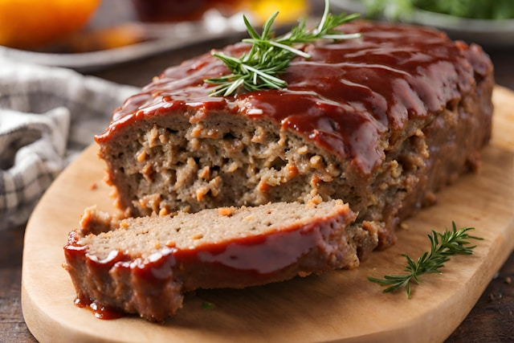

Meatloaf
I love this meatloaf recipe because it's simple, hearty, and full of flavor. It's one of those classic comfort foods that always reminds me of home-cooked family dinners. Plus, the leftovers make great sandwiches the next day!
Ingredients
- 1 pound ground beef
- 1 egg
- 1 small onion, finely chopped
- 1 cup breadcrumbs
- 1/2 cup milk
- 2 tablespoons ketchup
- 1 tablespoon Worcestershire sauce
- 1 teaspoon salt
- 1/2 teaspoon black pepper
- 1/4 cup ketchup and 1 tablespoon brown sugar for topping
Instructions
- Set your oven to 350°F (175°C). Lightly grease a loaf pan or line it with parchment paper.
- In a large bowl, combine ground beef, egg, onion, breadcrumbs, milk, ketchup, Worcestershire sauce, salt, and pepper. Mix until well combined.
- Press the mixture evenly into the loaf pan.
- Spread ketchup over the top, and if desired, sprinkle or mix in brown sugar for a sweeter glaze.
- Bake for 55060 minutes, or until the internal temperature reaches 160°F (70°C). Let rest for 5-10 minutes before slicing.